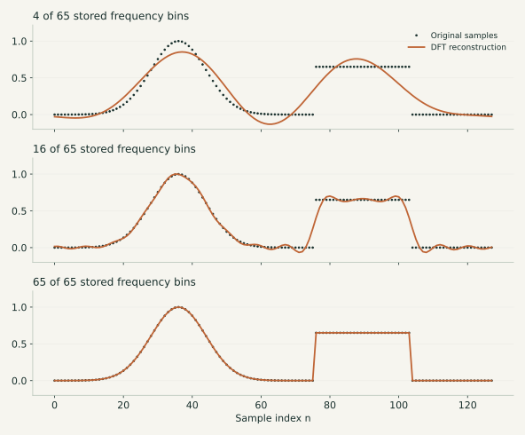
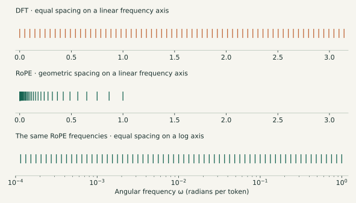
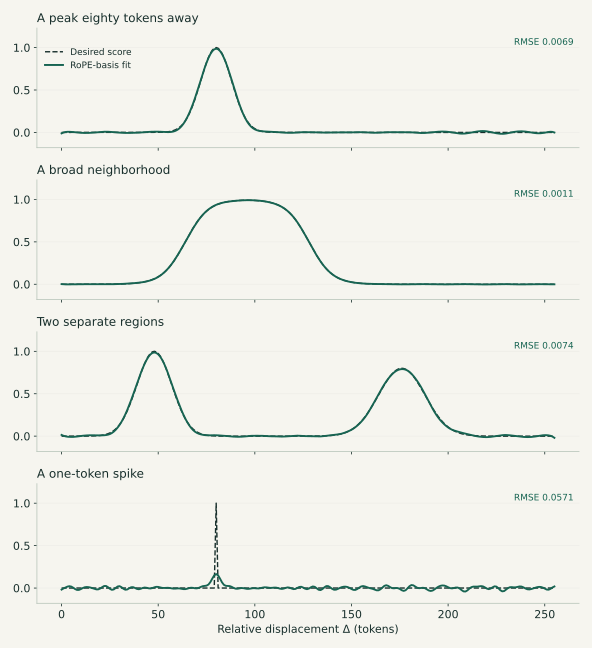
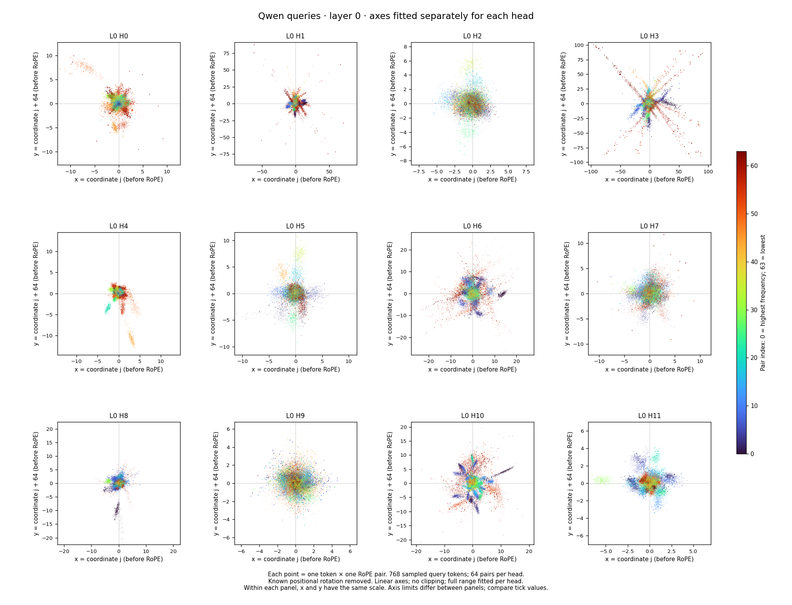

ROPE exploration
I wanted to understand how a transformer knows where to look. RoPE seemed like a good place to start. The parallel to the discrete Fourier transform (DFT) is fairly obvious, and I wanted to explore it in more detail.
The usual explanation is that RoPE rotates query and key vectors so their similarity depends on the distance between them. That explains the mechanism. What I wanted to know was what the mechanism could do.
Could a head look for something eighty tokens ago? Could it prefer a whole neighborhood rather than one position? Could it avoid a region? And if all of that was possible, did trained models actually use it?
Before trying to answer those questions, let’s start with what RoPE actually does.
What does RoPE change?
An attention head compares a query from one token with keys from the tokens it can attend to. A high dot product gives a key a higher attention score. Those scores become weights for combining information from the corresponding value vectors.
The words themselves are not enough to describe their relationship. “The dog followed the child” and “The child followed the dog” contain the same words, but their positions change the meaning.
RoPE—short for Rotary Position Embedding—brings position into the query–key comparison by rotating the vectors before taking their dot product. Its original description is in Su and colleagues’ RoFormer paper.
Each pair of coordinates rotates at its own frequency. When we expand the dot product, we get a sum of sines and cosines of the relative displacement. That is the connection I want to follow. Hua and colleagues’ Fourier Position Embedding paper (ICML 2025) makes this connection explicit: Section 2.2 interprets RoPE’s score as an inverse non-uniform DFT.
A shape, written as frequencies
First, a quick reminder of the ordinary DFT. Take a list of N samples. The DFT rewrites that list as coefficients of equally spaced frequencies. The inverse transform adds those components back together:
Each complex coefficient sets the amplitude and phase of a component; i is the imaginary unit. With all the coefficients, we recover every original sample, up to numerical rounding. This is true for any finite list of samples. It does not tell us the unknown continuous function between those samples.
Here is one shape: a smooth bump followed by a flat plateau. I reconstructed its 128 samples using progressively more frequency bins.

Why 65 stored bins rather than 128? For real-valued samples, the negative-frequency coefficients are conjugates of the positive-frequency ones. For even N, we can store N/2 + 1 bins: the zero and Nyquist bins are real, and the others are complex. That still gives exactly N independent real numbers. This is the precise version of “about N/2 complex coefficients.” NumPy’s DFT documentation describes this symmetry.
The same idea, with RoPE’s frequencies
RoPE gives us a different collection of frequencies. For a head with d coordinates, there are d/2 coordinate pairs. The usual schedule is:
Here B is the base; I use 10,000 in the examples below. Each frequency is the previous one multiplied by the same factor:
So the frequencies are geometrically spaced: unevenly spaced on an ordinary axis, evenly spaced on a logarithmic one. The DFT’s frequency grid, by comparison, has a constant difference between neighboring frequencies.

To see what that buys us, hold the query and key content fixed and vary their positions. Write their displacement as Δ = m − n, with query position m and key position n. Positive Δ means looking into the past. The scaled dot product after RoPE has this form:
The coefficients come from the query and key. They decide how much of each wave we add and its phase. In complex notation, the same expression is:
This is the Fourier connection: RoPE synthesizes a positional score from a non-uniform set of frequencies. It has the form of an inverse non-uniform Fourier transform; the attention layer does not need to run an FFT.
Where do the coefficients come from?
For coordinate pair j, write the unrotated vectors as (q₁, q₂) and (k₁, k₂). Expanding their rotated dot product gives:
The usual attention scaling is included in these coefficients. This uses an ordinary counterclockwise rotation and Δ = m − n. The posted tests check the expansion against explicitly rotated vectors.
ROPE in the same way as DFT is a universal function approximator
This is the intuition I wanted to explore: combine frequencies to build a desired positional shape. “Universal” needs a qualification here: a fixed RoPE head has a finite set of frequencies, so it cannot approximate every function arbitrarily well. The examples test what it can express on a chosen interval.
Now I can turn the original question into a small experiment. Choose a desired score at each of 256 displacements, then fit the sine and cosine coefficients using RoPE’s frequencies. I used a 128-dimensional head: 64 frequencies and 128 real coefficients.
The first three targets are a peak eighty tokens away, a broad neighborhood, and two separate regions. The last is deliberately harder: a spike at a single token.

The smooth shapes fit closely. The single-token spike does not: its peak is badly underestimated, even though the average error looks small because almost all the target samples are zero. With this frequency set and fitting method, a narrow spike is much harder to represent than a broad preference.
I used a small penalty on coefficient size to avoid fitting through enormous coefficients that cancel one another. In symbols, the fit minimizes:
There is an important qualification to “RoPE approximates what a DFT represents exactly.” A complete DFT is a basis for the sampled sequence. Here I chose fewer real coefficients than target samples, geometrically spaced frequencies, and a penalty on coefficient size. Those choices make this an approximation. Non-uniform spacing alone does not forbid exact interpolation: a non-uniform system with enough independent columns can also match finite samples exactly, although it may be poorly conditioned.
Combine the frequencies, then shift the shape
First, we combine the specific frequencies RoPE gives us. Their amplitudes determine how strongly each contributes; their phases determine where its peaks and troughs fall. Adding them lets some parts reinforce one another and other parts cancel. That is how we obtain the peak, broad neighborhood, and two-region examples above.
Once we have a shape, we can move it. Write each contribution as an amplitude times a phase-shifted cosine:
To translate the entire shape by t tokens, keep those amplitudes and change each phase by an amount proportional to its frequency:
The shifts must be coordinated: each frequency gets its own phase change. Giving every frequency the same angle would generally change the shape instead of simply moving it. Try moving the fitted examples below. A positive shift moves the preference farther into the past.
Same fitted coefficients and geometric frequencies as above; the phase shift is computed directly, without refitting. The shifted line is shown only where it samples the original 0–255 fitting interval. The displayed window crops the translated shape at its edges.
Looking for this mechanism in a model
I went digging for evidence that trained models use this mechanism: combining frequencies to shape a positional preference, then changing phases to move it. Finding exact, irrefutable evidence is somewhat difficult. The query and key both change with the text, and a clean-looking attention pattern does not by itself tell us why the model produced it. But along the way, I discovered a few things about RoPE.
One of my first steps was simply to look at the query and key coordinate pairs. These are the plots from that investigation, using Qwen2.5-1.5B-Instruct: all 28 layers, with 12 query heads and two shared key heads per layer. Each shared key head serves six query heads. The query plots contain 768 sampled tokens from 16 prose excerpts; the key plots contain all 2,379 prose tokens from those excerpts, excluding the chat prefix.
There are two ways to look at the same pairs. The Cartesian view shows the two coordinates directly; the other shows their amplitude and angle. In both, the known positional rotation has been removed to show the coordinates before RoPE. These are individual query or key angles, not the relative query–key angle of an attention score.
Layer 0 · 12 query heads · page 1 of 28

What caught my eye was how different the heads look: some clouds stay close to the origin, while others have long rays or compact groups far away from it. Colors help trace those groups to their frequency pairs. This gave me something concrete to investigate, but these pictures alone do not establish that a model builds and shifts a particular retrieval shape. They show the ingredients, before the query and key are combined.
Reproduce the figures
The constructed DFT and RoPE examples come from this Python script. It defines the target functions, fits the coefficients, and saves the figures together with the numerical errors and all plotted samples and coefficients. No model downloads or external data are needed for these constructed examples.
python -m pip install -r requirements.txt
python code/figures.py
python -m unittest discover -s code -p 'test_*.py'The model plots use the original saved activation data, split losslessly by layer. This reproduction script regenerates all 70 plot pages and all four PDFs. The original point counts, sampled token positions, and file hashes are included. The online viewer reuses the original plot images.
python code/reproduce_observations.py --verify
python code/reproduce_observations.py --kind queries --view xy --page 0
# Regenerate all 70 pages and all four PDFs:
python code/reproduce_observations.py --pdfSource and editing on GitHub · References: RoFormer; Fourier Position Embedding (§2.2); NumPy DFT conventions.